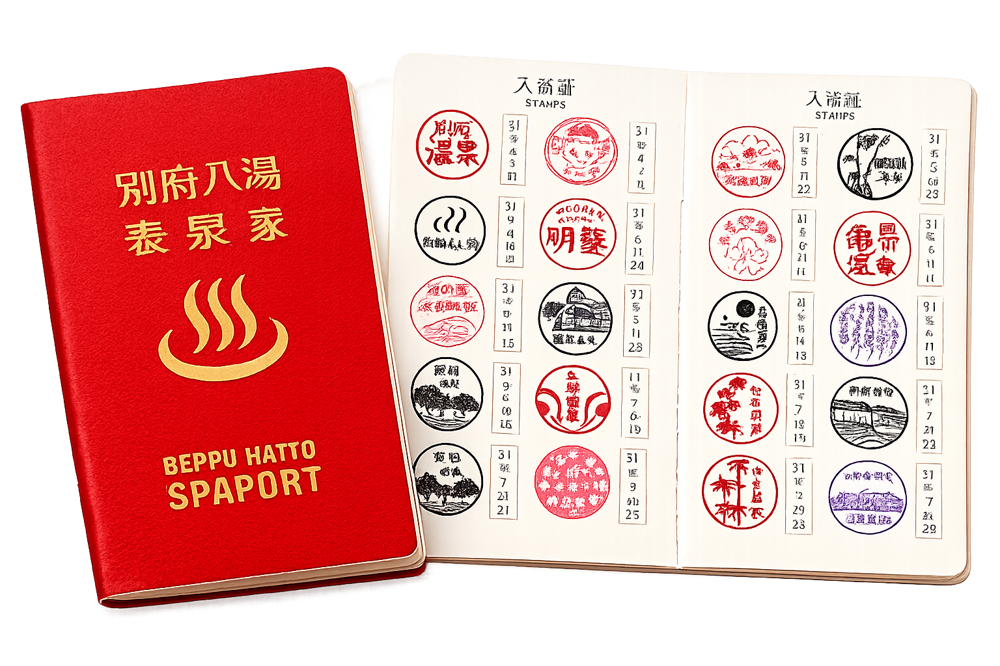
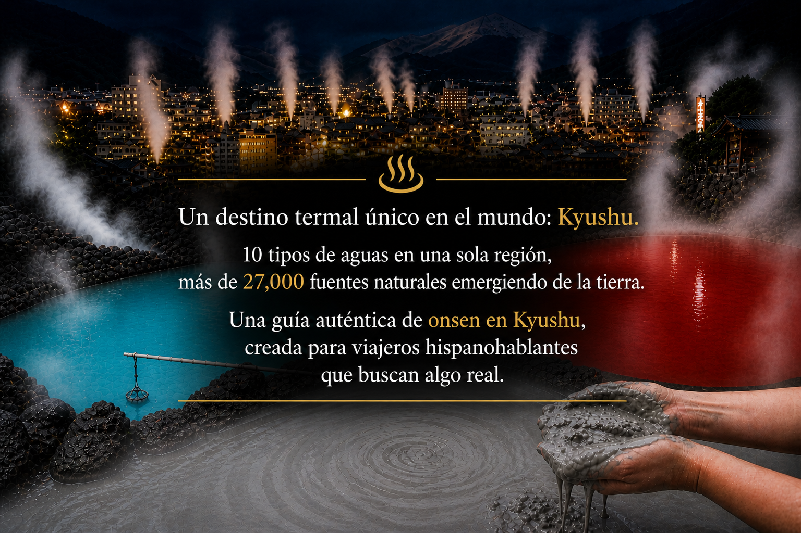
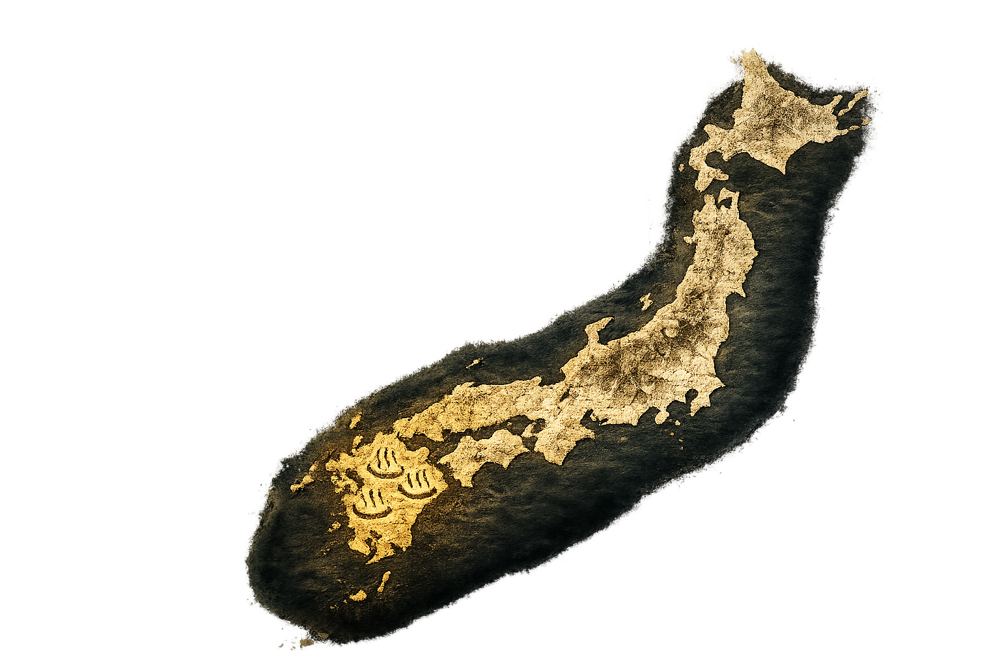
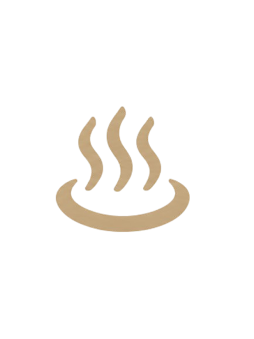
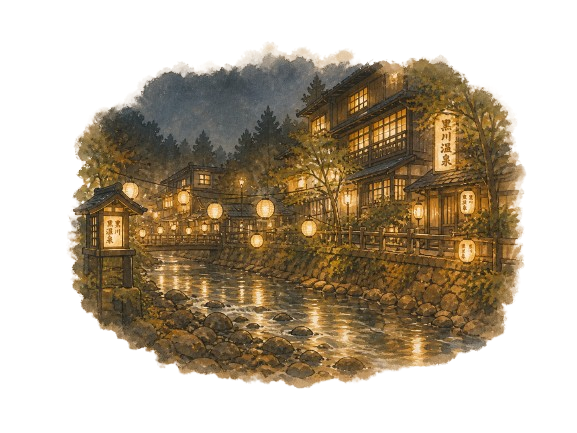

「Furuta… o Fruta, como me llaman.
Llevo años viajando, pero Kyushu es especial.
No hay otro lugar en el mundo como este」

温泉大国・日本の中でも、九州は別格だ。面積でいえばアイスランドより小さいこの島に、世界中で確認されている泉質の大半が集中している。火山列島の地下で何万年もかけて形成された10種類の源泉が、わずか数時間の範囲で全て体験できる場所は、地球上に九州しか存在しない。
| 温泉地 | 特徴 | 代表的な泉質 | 福岡からの所要時間 |
|---|---|---|---|
| Beppu | Mayor volumen de agua termal de Japón. 8 tipos de "infiernos" volcánicos. Densidad termal única en el mundo. | Azufre, hierro, barro, radón | Aprox. 2h en auto o bus |
| Yufuin | Valle brumoso con ryokan de lujo y rotenburo. Arte y onsen en perfecta armonía. | Terma alcalina simple (agua de belleza) | Aprox. 2h en auto o tren |
| Kurokawa | Onsen secreto al pie del monte Aso. Sistema único de "nyuto tegata" para visitar 3 baños. | Azufre, simple, bicarbonato | Aprox. 2.5h en auto |
| Unzen | Onsen de altura rodeado de fumarolas volcánicas. Aguas sulfurosas de color blanco lechoso. | Terma ácida sulfurosa (blanca) | Aprox. 2.5〜3h vía Nagasaki |
| Takeo / Ureshino | Uno de los onsen más antiguos de Japón. Ureshino es famoso por sus aguas suavizantes de piel. | Terma de bicarbonato sódico | Aprox. 1h en tren expreso |
日本政府が認定する温泉の泉質は10種類。それぞれ化学組成が異なり、肌への効果も、色も、匂いも全く違う。
温泉に入ったとき「白く濁っている」「少しぬるぬるする」「泡が肌につく」——その理由は全て泉質にある。
九州はこの10種類が一地域に揃う、世界でも唯一の場所だ。
| 泉質 | 見た目・特徴 | 主な効果 | 代表地 | 希少性 |
|---|---|---|---|---|
| 硫黄泉 | 白濁・青白い。硫黄の匂い。 | 皮膚病、動脈硬化 | 別府、雲仙 | ★★★ |
| 含鉄泉 | 赤褐色。鉄の匂い。 | 貧血、婦人病 | 血の池地獄（別府） | ★★★ |
| 二酸化炭素泉 | 無色透明、肌に泡がつく。 | 高血圧、循環器系 | 長湯（大分） | ★★★ |
| 塩化物泉 | 無色〜薄青。保温効果が高い。 | 神経痛、冷え性 | 福岡周辺、全域 | ★★ |
| 含泥泉 | 灰褐色の泥状。重い。 | 美肌、デトックス | 鬼山地獄（別府） | ★★★ |
| 酸性泉 | 黄色みがかる。pH3以下。 | 慢性皮膚疾患 | 明礬温泉（別府） | ★★★ |
| アルカリ性単純温泉 | 無色、肌がぬるぬるする。 | 美肌（美人の湯） | 由布院、黒川 | ★★ |
| 炭酸水素塩泉 | 薄緑〜無色。さっぱり。 | 皮膚清潔、糖尿 | 嬉野温泉 | ★ |
| 硫酸塩泉 | 無色透明。「傷の湯」。 | 神経痛、筋肉痛 | 武雄、嬉野 | ★ |
| 放射能泉（ラドン） | 無色透明。無味無臭。 | 痛風、リウマチ | 武雄温泉 | ★★ |
「どの温泉に入ればいいかわからない」という方へ——まずアルカリ性単純温泉（由布院・黒川）がおすすめ。
肌への刺激が少なく、独特のぬるぬる感が「本物の温泉」を実感させてくれる。
泉質の化学成分・入浴後のケア方法・健康への影響は、プレミアムマニュアルで詳しく解説しています。
スペイン語圏の旅行者からよく受ける質問がある——「タトゥーがあっても温泉に入れますか？」。
答えはシンプル：入れる方法が必ずある。ただし、施設によって異なるルールを知っておく必要がある。
歴史的に、日本のタトゥー（irezumi / 入れ墨）は暴力団組織（ヤクザ）と強く結びついていた。この社会的背景から、多くの温泉施設が「タトゥー禁止」のルールを設けた。現在は外国人観光客の増加とともに意識は変わりつつあるが、特に地元客が多い伝統的な施設では、今もルールが残っている場合がある。これはタトゥーそのものへの否定ではなく、施設の歴史的な慣習によるものだ。
1時間単位で借りる完全プライベートバス。
タトゥーの有無は一切関係ない。
カップル・家族・グループでの使用が多い。
2,000〜8,000円/時間が相場。
ウェブサイトに「禁止」と書いてあっても、
直接電話すると許可されることが多い。
特に外国人観光客には柔軟な施設が増えている。
客室に専用の露天風呂がついている旅館。
お風呂は完全にプライベートで制限なし。
由布院・黒川に多い。

明示的にタトゥーOKと
告知している施設が九州で増加中。
Furutaが随時リストを更新、記事にて公開中。

温泉は「お湯に入るだけ」ではありません。
ルールを知らないまま入ると、
気づかないうちに周りに迷惑をかけてしまうことも。
まずは無料ガイドで、正しい知識を手に入れてください。